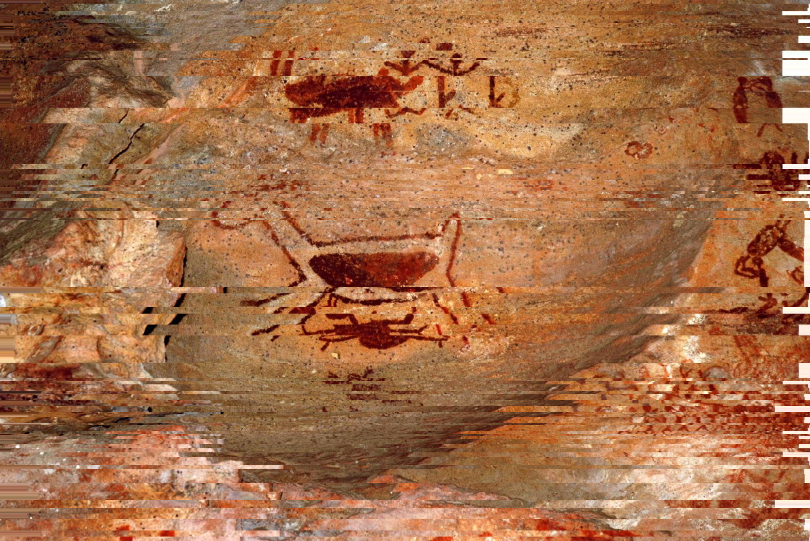

Glitch Art
O glitch art demonstra que até mesmo um erro pode adquirir significado e beleza quando utilizado como forma de expressão. O que normalmente seria considerado um defeito tecnológico passa a ser um elemento criativo e artístico.A imagem original foi alterada utilizando um efeito chamado "Slice", no Canva.
